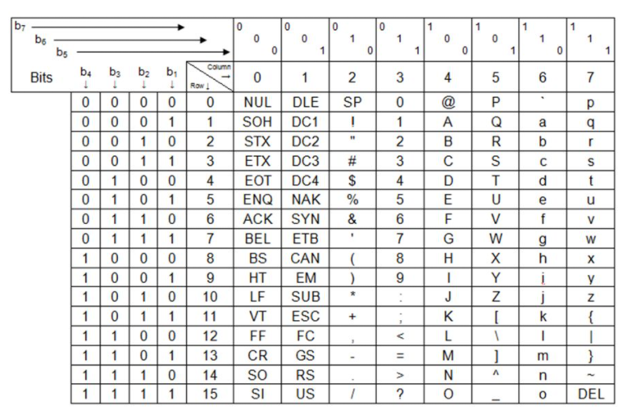

ASCII
(czyt. ... American Standard Code for Information Interchange) – siedmiobitowy system kodowania znaków, używany we współczesnych komputerach oraz sieciach komputerowych, a także innych urządzeniach wyposażonych w mikroprocesor.
